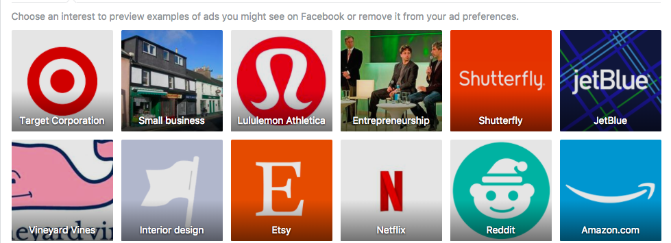
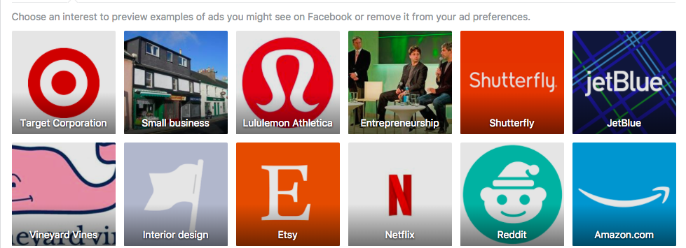
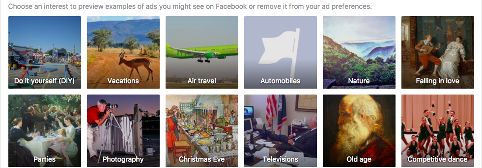
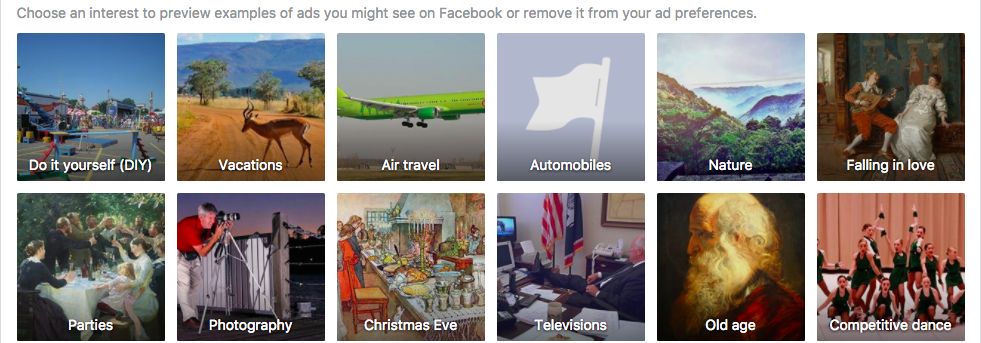
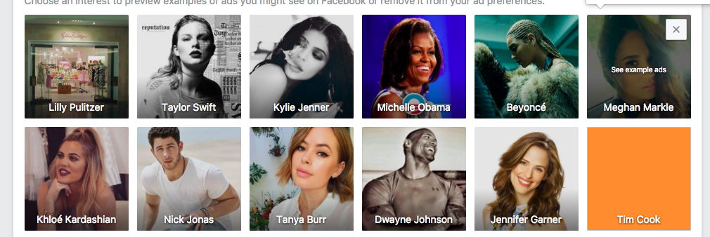
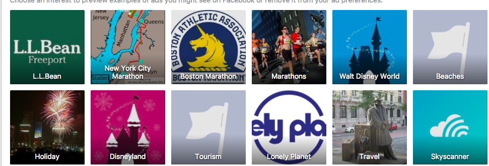
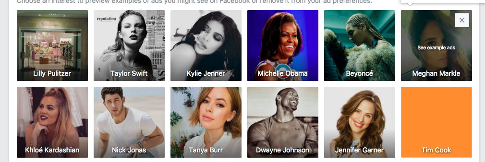
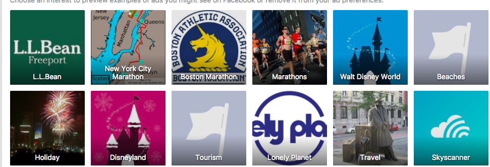

Results
What Facebook Knows about Me
These are some of the things that come up about who Facebook thinks I am and what I would be interested in
 

 

 



As seen in the above photos knows a lot about from my race, political standing, to even what Iphone I use. I never how much Facebook was able to track even about my phone. Also the below ads are have interacted so Facebook tries to show me more things that they think I would be interested in.
Experiements

Experiment 1: Dictionary

Experiemnt 1: Bar Graph

Experiemnt 2: Dictionary

Experiemnt 2: Bar Graph

Experiement 3: Dictionary

Experiment 3: Bar Graph
Comparing my results to what Facebook knows about me is very interesting because it provides insight into why I got the results I got. Interestingly enough, Jetblue came as one of my top contenders even though I used Delta as an experiement. Maybe I did not see Delta because in my Facebook ad preferences Jetblue is higher and Facebook is more inclined to ads on Jetblue instead of Delta. While I did not get any airlines, I did see more sponsored posts about traveling like places to stay and eat. So even though Delta ads did not show up, Facebook seemed to be helping plan the next step of my vacation as Vacations and air travel where some of my top preferences. Similarly I chose Madewell as the brand I wanted to test but other brands such as JCrew, Kohls, Sephora where in my top fashion preferences so I saw high number of ads for these companies instead. I would be interesting to find if these show their ads more when they see I have been shopping at other brands. This also shows how I often online shop because both the category Amazon and online shopping was included in my preferences.
Discussion
The results I found are intriguing. I never knew Facebook would be able to tell what Iphone I am using. I also think my political standing was interesting because I consider myself moderate leaning on the liberal side with the current political climate, but never a full on liberal. It would be interesting to see if based on news articles I clicked on, I am more liberal then moderate. I think the most surprising thing I found was that neither company were in the top ads when going through my facebook feed. As mentoined above, I wonder since it is not high on my preferences that Facebook shows ads that they think I would like better even I visited the page frequently.
Conclusion and Future Study
Facebook knows a little bit too much about me that I might have to change my privacy settings on the app. With the database of information Facebook has collected of me since I have been a user I think affected what ads I was able to see.
Facebook did not show me ads of the companies but instead ads of things related to the company. Sephora and Ulta popped up frequently showing that when people search up clothes they often would like makeup that goes with it. It was surprising not to see a single ad for either of the two websites. If I had allowed it to collect say fifty or hundred ads, it might have been different. However, everytime you refresh your newsfeed, the most important ads are at the top meaning my two sites were either outbid for being on my newsfeed or were considered less important then Facebook.
I think there were outside factors that I affected what I did today. My Facebook account is associated with my Google account and my searches through selenium was not. Logging into my Google account could have helped keep track of sites I was visiting. Adittionally, Facebook is not taking only from my Facebook on my computer, but my phone and my other accounts connected to my Facebook. While testing this code, I was browsing through my Instagram and online window shopping which could have skewed the results.
For future study, I would start a brand new Facebook and google account for Facebook to track and see if my experiments work there because Facebook would have no outside factors. Another option would be to compare my google History to my Facebook and Instagram ads. Since Facebook and Instagram are owned by the same company, it would be interesting to see if I get the same ads or different ads on the two sites. This project makes me want to find more about my digital footprint and how interconnected the Internet really is.
P